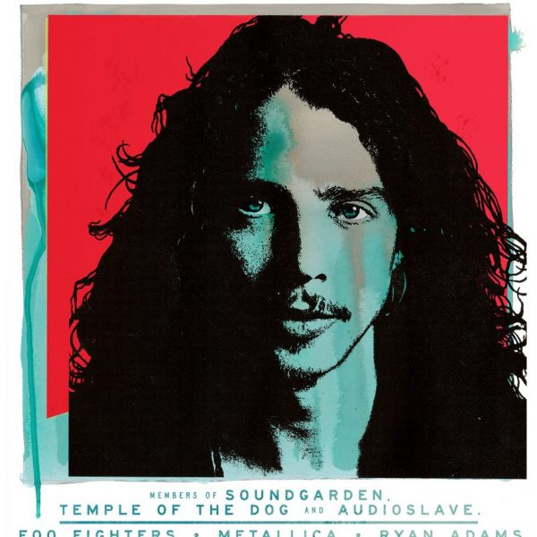
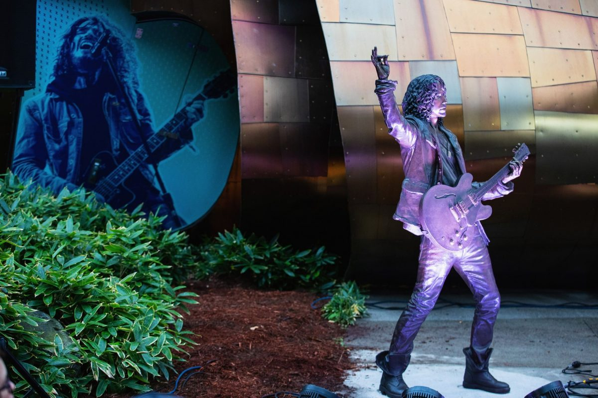
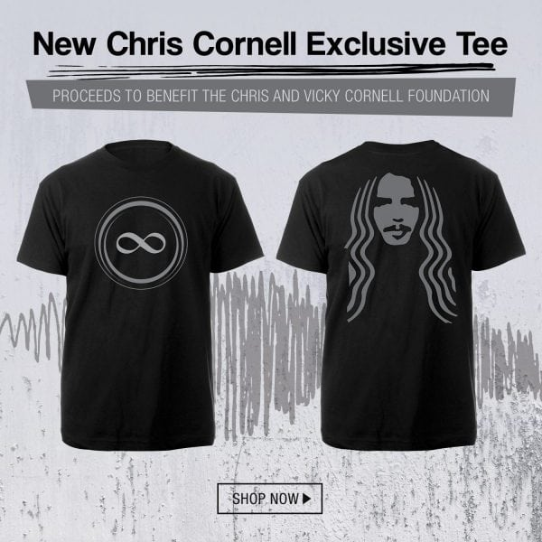

OCTOBER 23, 2019
SOUNDGARDEN ROCK & ROLL HALL OF FAME NOMINATION
CONGRATULATIONS Soundgarden!!! I know Chris would be so honored! Thank you Rock & Roll Hall of Fame.
Thank you to the Rock & Roll Hall of Fame for this wonderful acknowledgement of Soundgarden’s legacy and body
of
work. Ben, Matt, and I feel very proud and honored. I know that Chris would feel the same esteem and regard to
be recognized by this nomination. – Kim Thayil
The Rock & Roll Hall of Fame Fan Vote is officially open. Cast your vote for Soundgarden now at goo.gle/RHFanVote.
FEBRUARY 18, 2019
‘CHRIS CORNELL’ CAREER RETROSPECTIVE – OUT NOW!
The ‘Chris Cornell’ Career Retrospective, featuring “When Bad Does Good,” is available now
at www.chriscornell.com.
NOVEMBER 13, 2018
I AM THE HIGHWAY: A TRIBUTE TO CHRIS CORNELL
‘I Am The Highway: A Tribute To Chris Cornell’ will take place on Wednesday, January 16,
2019
at The Forum in Los Angeles. The event will feature performances from the members of Soundgarden, Temple of the
Dog
and Audioslave, plus Foo Fighters, Metallica, Ryan Adams and many more. Tickets go on sale this Friday, November
16
at 10am pt at: http://bit.ly/IAmTheHighway. Proceeds will benefit
EBMRF.

OCTOBER 9, 2018
SOUNDGARDEN AND FAMILY HONOR CHRIS CORNELL AT SEATTLE STATUE UNVEILING
A massive crowd gathered on a misty Sunday to honor the late grunge pioneer Chris Cornell. The Seattle Museum of
Pop Culture unveiled a life-size bronze statue of the late Soundgarden singer, which was commissioned by his
widow, Vicky Cornell. She was there with their children Lily, Toni and Christopher, as well as Cornell’s former
bandmates Kim Thayil, Matt Cameron and Ben Shepherd.
Full Story:
https://www.rollingstone.com/music/music-news/soundgarden-chris-cornell-seattle-statue-unveiling-734199/

JULY 18, 2018
CHRIS CORNELL INFINITY TEE
“Soon after Chris passed away, I was inspired to make a care package for the last Soundgarden crew from the
fateful April/May tour of 2017. With the help of Josh Graham and Chris Siglin,we created shirts, stickers and
hoodies for our crew. Since March 2018, I have been wearing the “Chris stage shirt” I designed and fans have
been
loving it on social media. Josh Graham and I created a new version of my “Chris stage shirt” that I hope our
fans
will like as much as I do. Vicky Cornell and I have decided to make the shirt available to the public, with all
proceeds going to our various charities. Wear it with pride. Thank you and Loudest of Love to you all.” – Matt
Cameron
The Chris Cornell Infinity Tee (featuring artwork by Matt Cameron and Josh Graham) is available now at:
http://smarturl.it/CCFoundationTee.
Proceeds from the sale of this shirt will benefit The Chris and Vicky
Cornell Foundation.
